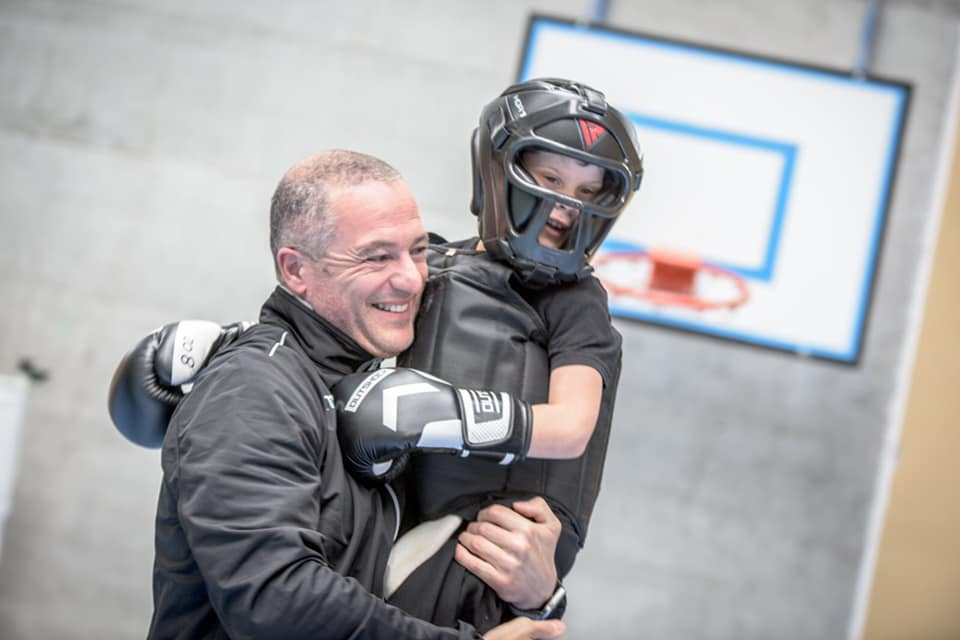
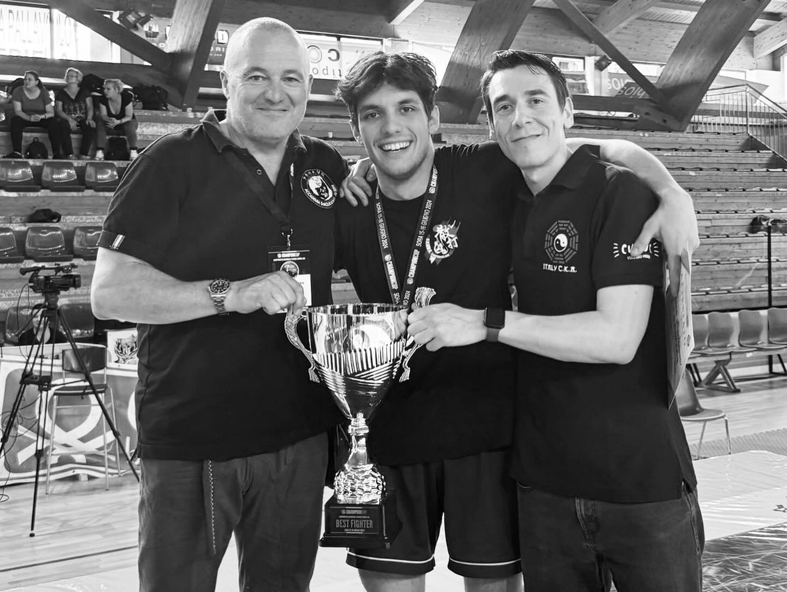

Il SANDA è l'espressione del kung fu in combattimento sportivo. Nasce dall’esigenza di portare l’agonismo anche nel mondo del Kung Fu attraverso un puro combattimento sportivo e spettacolare, completo in ogni sua parte, alternando tecniche di calci, pugni e proiezioni.
Le categorie di light sanda e contatto pieno permettono ad ogni atleta di intraprendere il percorso agonistico con tutte le sicurezze che richiede una competizione marziale.
L’elevata attività cardio-vascolare durante l’allenamento, associata alla precisione e all’efficacia delle tecniche, favoriscono la formazione dell’atleta a tutto tondo. La formazione si completa e si valorizza con l’unione della pratica dello stile tradizionale con quella del Sanda.